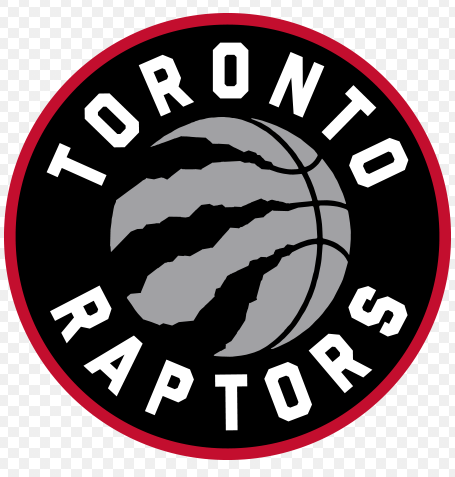

Raptors
The Toronto Raptors are a Canadian professional basketball team based in Toronto. The Raptors compete in the National Basketball Association (NBA) as a member of the league's Eastern Conference Atlantic Division. They normally play their home games at Scotiabank Arena, which they share with the Toronto Maple Leafs of the National Hockey League (NHL), but they are currently using the Amalie Arena in Tampa, Florida as their home during 2020–21 season due to the COVID-19 pandemic in Toronto. The team was founded in 1995 as part of the NBA's expansion into Canada, along with the Vancouver Grizzlies. Since the 2001–02 season, the Raptors have been the only Canadian-based team in the league, as the Grizzlies relocated from Vancouver to Memphis, Tennessee. As with most expansion teams, the Raptors struggled in their early years, but after the acquisition of Vince Carter through a draft-day trade in 1998, the franchise set league-attendance records and made the NBA playoffs in 2000, 2001, and 2002. Carter was instrumental in leading the team to their first playoff series win in 2001, where they advanced to the Eastern Conference semifinals. During the 2002–03 and 2003–04 seasons, they failed to make significant progress, and Carter was traded in 2004 to the New Jersey Nets. After Carter left, Chris Bosh emerged as the team leader. For the 2006–07 season, Bryan Colangelo was appointed as general manager, and through a combination of Bosh, 2006 first overall draft pick Andrea Bargnani, and a revamp of the roster, the Raptors qualified for their first playoff berth in five years, capturing the Atlantic Division title. In the 2007–08 season, they also advanced to the playoffs but failed to reach the postseason in each of the next five seasons. Colangelo overhauled the team's roster for the 2009–10 season in a bid to persuade pending free agent Bosh to stay, but Bosh departed to sign with the Miami Heat in July 2010, ushering in yet another era of rebuilding for the Raptors. Masai Ujiri replaced Colangelo in 2013 and helped herald a new era of success, led by a backcourt duo of DeMar DeRozan and Kyle Lowry. The Raptors returned to the playoffs the following year and became a consistent playoff team in every year of Ujiri's tenure. Under Ujiri, the team also won five Division titles and registered their most successful regular season in 2018. However, the team's failure to reach the NBA Finals prompted Ujiri to fire head coach Dwane Casey after the 2018 playoffs concluded and conduct the high-profile trade of DeRozan for Kawhi Leonard and Danny Green later that summer, as well as acquiring Marc Gasol before the trade deadline. In the 2019 playoffs, the Raptors won their first Eastern Conference title and advanced to their first NBA Finals, where they won their first NBA championship.
Vincent Lamar Carter Jr. (born January 26, 1977) is an American former professional basketball player who is a basketball analyst for ESPN. He has been ranked as the greatest dunker of all time by numerous players, journalists, and by the National Basketball Association (NBA). He primarily played the shooting guard and small forward positions, but occasionally played power forward later in his career. Carter was an eight-time All-Star in the NBA and a two-time All-NBA Team selection. He is the only player in NBA history to play 22 seasons and in four different decades from his debut in 1999 to his retirement in 2020. Carter entertained crowds with his leaping ability and slam dunks, earning nicknames such as "Vinsanity", "Air Canada", and "Half Man, Half Amazing". A high school McDonald's All-American, Carter played college basketball for three years with the North Carolina Tar Heels and twice advanced to the Final Four of the NCAA Tournament. He was selected with the fifth overall pick in the 1998 NBA draft by the Golden State Warriors, who traded him to the Toronto Raptors. Carter emerged as a star in Toronto as he won the 1999 NBA Rookie of the Year Award and the Slam Dunk Contest at the 2000 NBA All-Star Weekend. He represented the United States in the 2000 Summer Olympics where he won a gold medal. In December 2004, Carter was traded to the New Jersey Nets, where he continued his offensive success. Carter also played for the Orlando Magic, Phoenix Suns, Dallas Mavericks, Memphis Grizzlies, Sacramento Kings, and Atlanta Hawks. He received the Twyman–Stokes Teammate of the Year Award in 2016. Off the court, Carter established the Embassy of Hope Foundation, assisting children and their families in Florida, New Jersey, and Ontario. He was recognized in 2000 as Child Advocate of the Year by the Children's Home Society, and he received the Florida Governor's Points of Light award in 2007 for his philanthropy in his home state.
Pascal Siakam (born 2 April 1994) is a Cameroonian professional basketball player for the Toronto Raptors of the National Basketball Association (NBA). Siakam played college basketball for the New Mexico State Aggies and was named the Western Athletic Conference Player of the Year in 2016. Nicknamed "Spicy P", he was selected by Toronto with the 27th overall pick in the first round of the 2016 NBA draft. After being assigned to the NBA Development League (now the G League) as a rookie in 2017, he led Toronto’s affiliate team to a league championship and picked up Finals Most Valuable Player honors in the process. Siakam would later help the Raptors claim an NBA championship in 2019 while winning the league's Most Improved Player Award in the same season, the first player to win both during the same season. He was named an NBA All-Star for the first time in the 2019–20 season. He made his first All-NBA Team in 2020